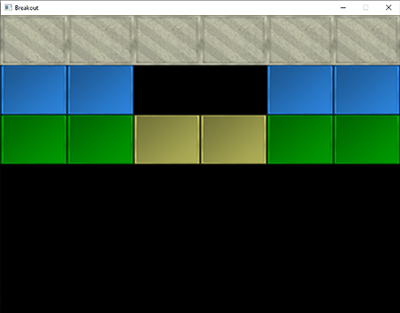
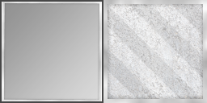
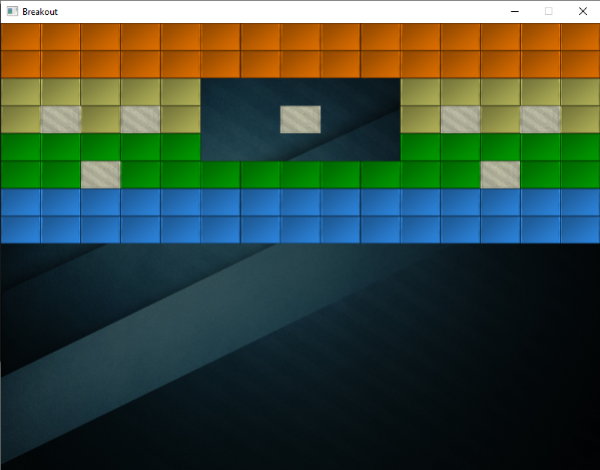
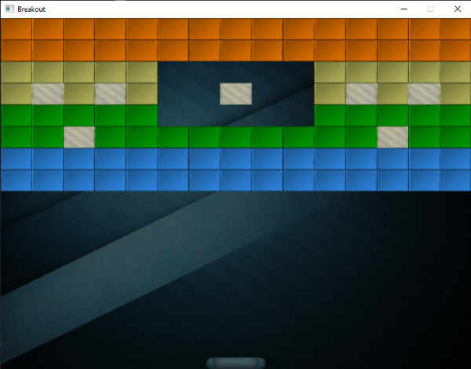

Levels
In-Practice/2D-Game/Levels
Breakout is unfortunately not just about a single happy green face, but contains complete levels with a lot of playfully colored bricks. We want these levels to be configurable such that they can support any number of rows and/or columns, we want the levels to have solid bricks (that cannot be destroyed), we want the levels to support multiple brick colors, and we want them to be stored externally in (text) files.
In this chapter we'll briefly walk through the code of a game level object that is used to manage a large amount of bricks. We first have to define what an actual
We create a component called a
Each object in the game is represented as a
A level in Breakout consists entirely of bricks so we can represent a level by exactly that: a collection of bricks. Because a brick requires the same state as a game object, we're going to represent each brick of the level as a
class GameLevel
{
public:
// level state
std::vector<GameObject> Bricks;
// constructor
GameLevel() { }
// loads level from file
void Load(const char *file, unsigned int levelWidth, unsigned int levelHeight);
// render level
void Draw(SpriteRenderer &renderer);
// check if the level is completed (all non-solid tiles are destroyed)
bool IsCompleted();
private:
// initialize level from tile data
void init(std::vector<std::vector<unsigned int>> tileData,
unsigned int levelWidth, unsigned int levelHeight);
};
Since a level is loaded from an external (text) file, we need to propose some kind of level structure. Here is an example of what a game level may look like in a text file:
1 1 1 1 1 1
2 2 0 0 2 2
3 3 4 4 3 3
A level is stored in a matrix-like structure where each number represents a type of brick, each one separated by a space. Within the level code we can then assign what each number represents. We have chosen the following representation:
- A number of 0: no brick, an empty space within the level.
- A number of 1: a solid brick, a brick that cannot be destroyed.
- A number higher than 1: a destroyable brick; each subsequent number only differs in color.
The example level listed above would, after being processed by

The
void GameLevel::Load(const char *file, unsigned int levelWidth, unsigned int levelHeight)
{
// clear old data
this->Bricks.clear();
// load from file
unsigned int tileCode;
GameLevel level;
std::string line;
std::ifstream fstream(file);
std::vector<std::vector<unsigned int>> tileData;
if (fstream)
{
while (std::getline(fstream, line)) // read each line from level file
{
std::istringstream sstream(line);
std::vector<unsigned int> row;
while (sstream >> tileCode) // read each word separated by spaces
row.push_back(tileCode);
tileData.push_back(row);
}
if (tileData.size() > 0)
this->init(tileData, levelWidth, levelHeight);
}
}
The loaded tileData is then passed to the game level's
void GameLevel::init(std::vector<std::vector<unsigned int>> tileData,
unsigned int lvlWidth, unsigned int lvlHeight)
{
// calculate dimensions
unsigned int height = tileData.size();
unsigned int width = tileData[0].size();
float unit_width = lvlWidth / static_cast<float>(width);
float unit_height = lvlHeight / height;
// initialize level tiles based on tileData
for (unsigned int y = 0; y < height; ++y)
{
for (unsigned int x = 0; x < width; ++x)
{
// check block type from level data (2D level array)
if (tileData[y][x] == 1) // solid
{
glm::vec2 pos(unit_width * x, unit_height * y);
glm::vec2 size(unit_width, unit_height);
GameObject obj(pos, size,
ResourceManager::GetTexture("block_solid"),
glm::vec3(0.8f, 0.8f, 0.7f)
);
obj.IsSolid = true;
this->Bricks.push_back(obj);
}
else if (tileData[y][x] > 1)
{
glm::vec3 color = glm::vec3(1.0f); // original: white
if (tileData[y][x] == 2)
color = glm::vec3(0.2f, 0.6f, 1.0f);
else if (tileData[y][x] == 3)
color = glm::vec3(0.0f, 0.7f, 0.0f);
else if (tileData[y][x] == 4)
color = glm::vec3(0.8f, 0.8f, 0.4f);
else if (tileData[y][x] == 5)
color = glm::vec3(1.0f, 0.5f, 0.0f);
glm::vec2 pos(unit_width * x, unit_height * y);
glm::vec2 size(unit_width, unit_height);
this->Bricks.push_back(
GameObject(pos, size, ResourceManager::GetTexture("block"), color)
);
}
}
}
}
The
Here we load the game objects with two new textures, a block texture and a solid block texture.

A nice little trick here is that these textures are completely in gray-scale. The effect is that we can neatly manipulate their colors within the game-code by multiplying their grayscale colors with a defined color vector; exactly as we did within the
The
The game level class gives us a lot of flexibility since any amount of rows and columns are supported and a user could easily create his/her own levels by modifying the level files.
Within the game
We would like to support multiple levels in the Breakout game so we'll have to extend the game class a little by adding a vector that holds variables of type
class Game
{
[...]
std::vector<GameLevel> Levels;
unsigned int Level;
[...]
};
This series' version of the Breakout game features a total of 4 levels:
Each of the textures and levels are then initialized within the game class's
void Game::Init()
{
[...]
// load textures
ResourceManager::LoadTexture("textures/background.jpg", false, "background");
ResourceManager::LoadTexture("textures/awesomeface.png", true, "face");
ResourceManager::LoadTexture("textures/block.png", false, "block");
ResourceManager::LoadTexture("textures/block_solid.png", false, "block_solid");
// load levels
GameLevel one; one.Load("levels/one.lvl", this->Width, this->Height / 2);
GameLevel two; two.Load("levels/two.lvl", this->Width, this->Height / 2);
GameLevel three; three.Load("levels/three.lvl", this->Width, this->Height / 2);
GameLevel four; four.Load("levels/four.lvl", this->Width, this->Height / 2);
this->Levels.push_back(one);
this->Levels.push_back(two);
this->Levels.push_back(three);
this->Levels.push_back(four);
this->Level = 0;
}
Now all that is left to do, is actually render the level. We accomplish this by calling the currently active level's
void Game::Render()
{
if(this->State == GAME_ACTIVE)
{
// draw background
Renderer->DrawSprite(ResourceManager::GetTexture("background"),
glm::vec2(0.0f, 0.0f), glm::vec2(this->Width, this->Height), 0.0f
);
// draw level
this->Levels[this->Level].Draw(*Renderer);
}
}
The result is then a nicely rendered level that really starts to make the game feel more alive:

The player paddle
While we're at it, we may just as well introduce a paddle at the bottom of the scene that is controlled by the player. The paddle only allows for horizontal movement and whenever it touches any of the scene's edges, its movement should halt. For the player paddle we're going to use the following texture:
A paddle object will have a position, a size, and a sprite texture, so it makes sense to define the paddle as a
// Initial size of the player paddle
const glm::vec2 PLAYER_SIZE(100.0f, 20.0f);
// Initial velocity of the player paddle
const float PLAYER_VELOCITY(500.0f);
GameObject *Player;
void Game::Init()
{
[...]
ResourceManager::LoadTexture("textures/paddle.png", true, "paddle");
[...]
glm::vec2 playerPos = glm::vec2(
this->Width / 2.0f - PLAYER_SIZE.x / 2.0f,
this->Height - PLAYER_SIZE.y
);
Player = new GameObject(playerPos, PLAYER_SIZE, ResourceManager::GetTexture("paddle"));
}
Here we defined several constant values that define the paddle's size and speed. Within the Game's
With the player paddle initialized, we also need to add a statement to the Game's
Player->Draw(*Renderer);
If you'd start the game now, you would not only see the level, but also a fancy player paddle aligned to the bottom edge of the scene. As of now, it doesn't really do anything so we're going to delve into the Game's
void Game::ProcessInput(float dt)
{
if (this->State == GAME_ACTIVE)
{
float velocity = PLAYER_VELOCITY * dt;
// move playerboard
if (this->Keys[GLFW_KEY_A])
{
if (Player->Position.x >= 0.0f)
Player->Position.x -= velocity;
}
if (this->Keys[GLFW_KEY_D])
{
if (Player->Position.x <= this->Width - Player->Size.x)
Player->Position.x += velocity;
}
}
}
Here we move the player paddle either in the left or right direction based on which key the user pressed (note how we multiply the velocity with the x value would be less than 0 it would've moved outside the left edge, so we only move the paddle to the left if the paddle's x value is higher than the left edge's x position (0.0). We do the same for when the paddle breaches the right edge, but we have to compare the right edge's position with the right edge of the paddle (subtract the paddle's width from the right edge's x position).
Now running the game gives us a player paddle that we can move all across the bottom edge:

You can find the updated code of the Game class here: